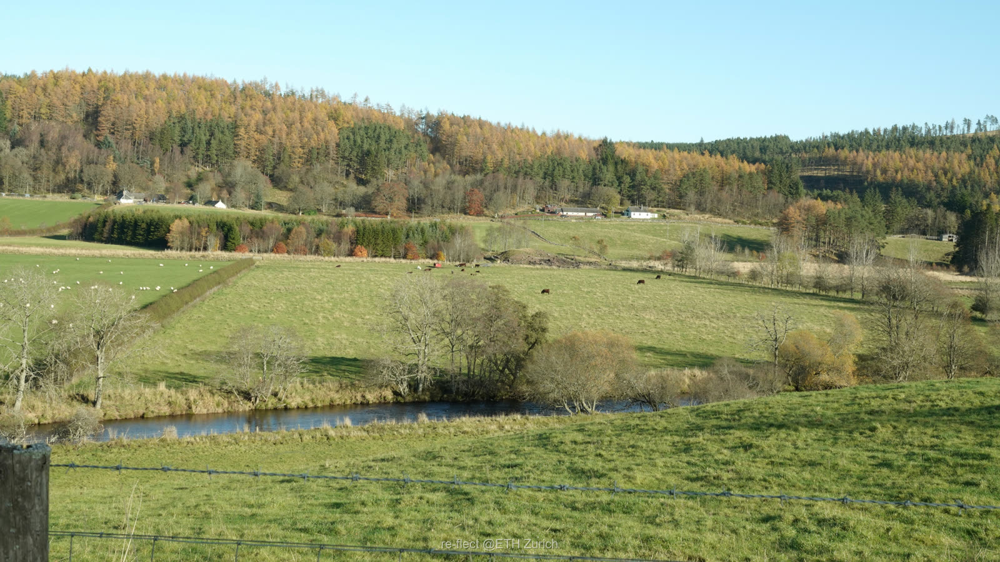
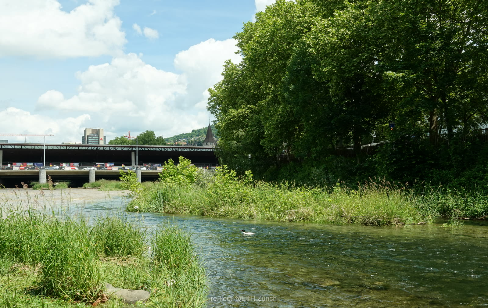
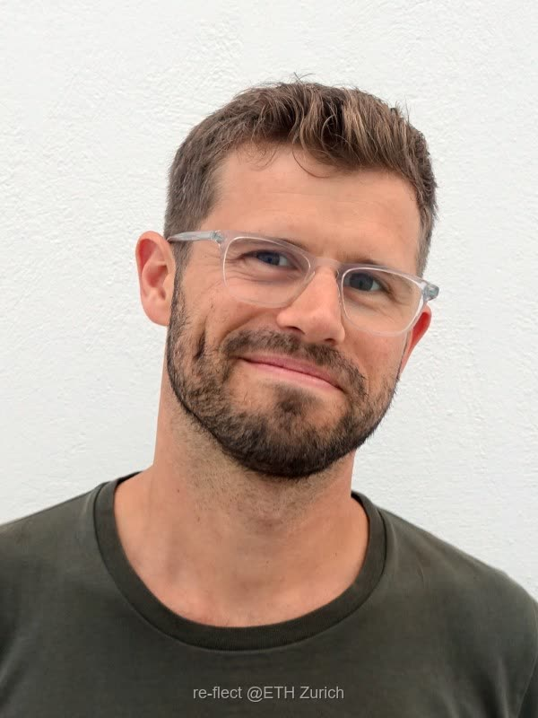
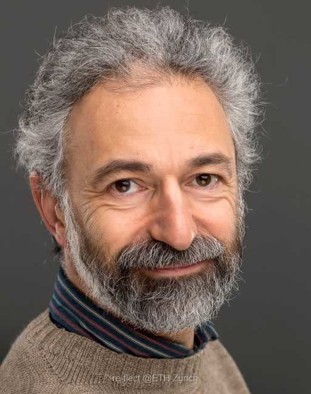
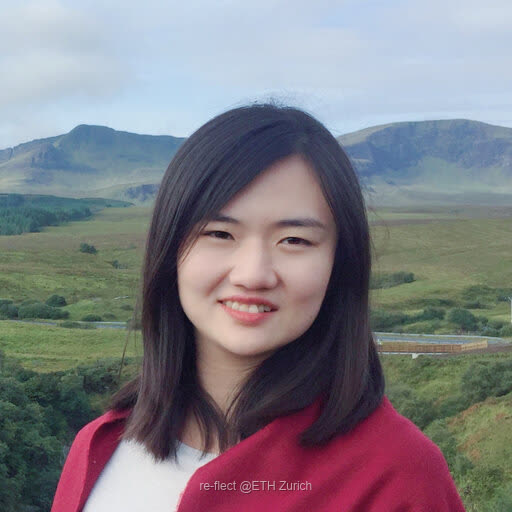
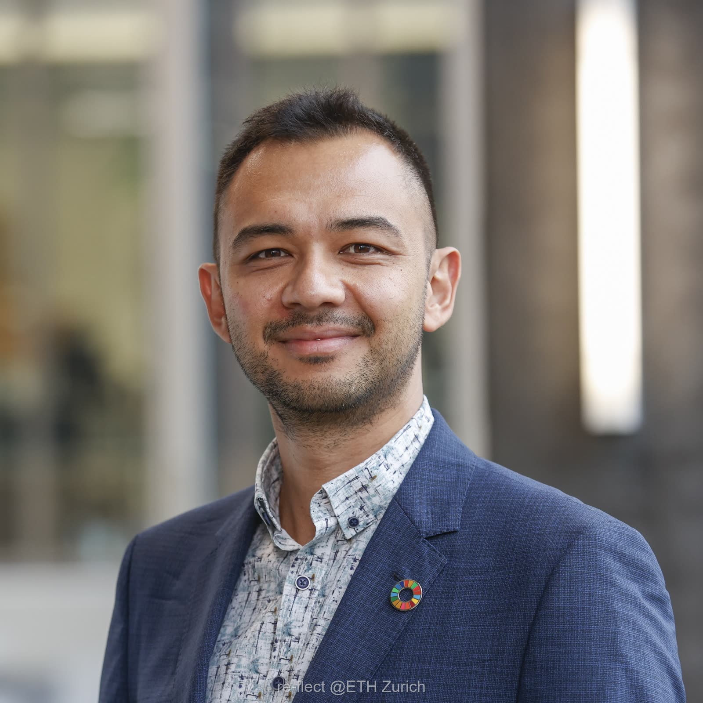
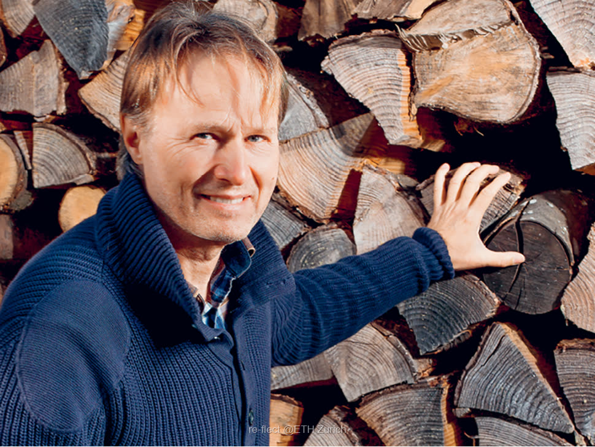
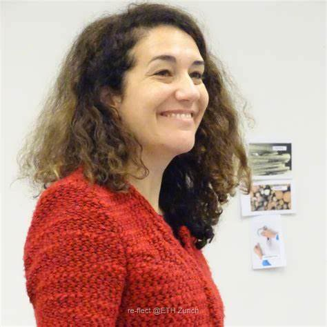

Rural · ScotlandOverexposed to sunlight
Many Scottish rivers have lost their riparian woodlands, driving water temperatures up and threatening cold-water species.
≈2°Cpeak temperature drop from woodland within a 25 m buffer

Letting stakeholders co-design and reflect on restoration scenarios.
Restoration decisions are too often made without a shared picture of how light shapes a waterway. re•flect integrates geographic and ecological models with real-time visual feedback to simulate how planning decisions shape the landscape and its consequences.

Rural · ScotlandMany Scottish rivers have lost their riparian woodlands, driving water temperatures up and threatening cold-water species.

Urban · ZurichDense development has driven waterways underground, severing habitats and disrupting ecological connectivity.
re•flect makes environmental knowledge accessible to non-experts, enabling stakeholders to participate in ecosystem restoration. It allows users to assess trade-offs among land-use options and ecosystem services such as agricultural productivity, climate and water regulation, biodiversity, and restoration costs.
Building on video-game engine technologies, our tool will allow stakeholders to co-design river restoration scenarios. By integrating environmental data, ecological models, planning regulations, and interactive 3D visualisations, it automates the generation of landscape elements such as daylighted rivers and riparian woodland. It will enable users to explore, modify, and combine land-use and restoration alternatives in real time.
The tool will be tested with stakeholders in workshops.
By modelling vegetation and daylight regimes in three dimensions, re•flect reveals where shade delivers the greatest ecological return — turning "plant more trees" into a precise, place-based strategy.






Develop realistic future scenarios for the fundamental changes in daylight availability that result from river restoration.
Test the effectiveness that visualisations of these scenarios have on decision-makers' and stakeholders' support of river restoration.
Develop an online visualisation tool to facilitate decision-making about daylight management in river restoration.
Completed through literature review, spatial analysis and socio-political assessment in rural Scotland and the City of Zurich — identifying the key opportunities and constraints for stream daylighting.
Completed: vegetation-classification review, field assessment, spatial analysis and daylight modelling define a set of structurally distinct riparian habitat types that directly inform the visual restoration scenarios.
Generative-AI tools were tested for scenario imagery; guided by WP1's user needs — longitudinal navigation and technical indicators — the tool shifted from 2D AI images to interactive 3D landscape visualisation (Unreal Engine), now being refined for stakeholder testing.
✓ Completed · ◐ In progress · ○ Upcoming
Empowering stakeholders to participate meaningfully in ecosystem restoration — one daylit stream at a time.